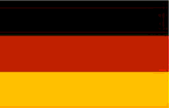

Idiomas
Português

Amo o Português, lingua majestosa. É também minha lingua materna, sempre terei muito apreço por ela
- Leio muito bem;
- Escrevo muito bem;
- Falo muito bem.
Inglês
Gosto muito da língua inglesa, comecei desde pequeno a estudar, pedia ajuda ao meu pai para traduzir algumas coisas, outras procurava no dicionário. Aos 14 anos fiz um curso na OK Idiomas.
Vejo muitos filme e séries, e escuto bastante músicas em inglês, com isso tenho um vocabulário bastante vasto e certa facilidade na conversação
- Leio bem;
- Escrevo bem;
- Falo bem.
Alemão
Particularmente adoro a lingua alemã, um pouco pela pequena semelhança que há em alguns verbetes com o inglês, mas também por algumas características dela, como a sonoridade
Faz pouco tempo que estudo essa língua, mas sempre arrumo um tempo para aprender algumas expressões e melhorar meu vocabulário
- Leio razoavelmente;
- Escrevo muito pouco;
- Falo quase nada.